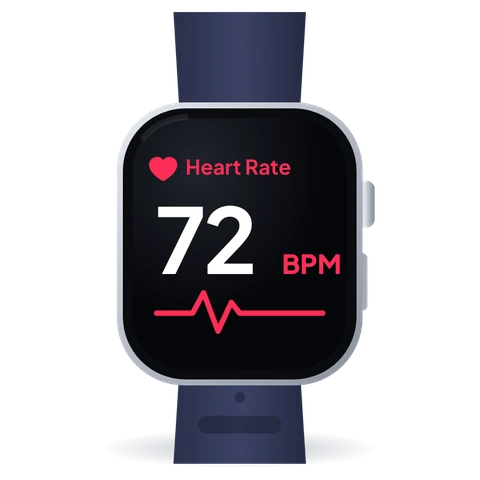
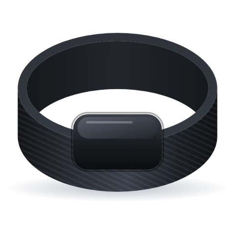
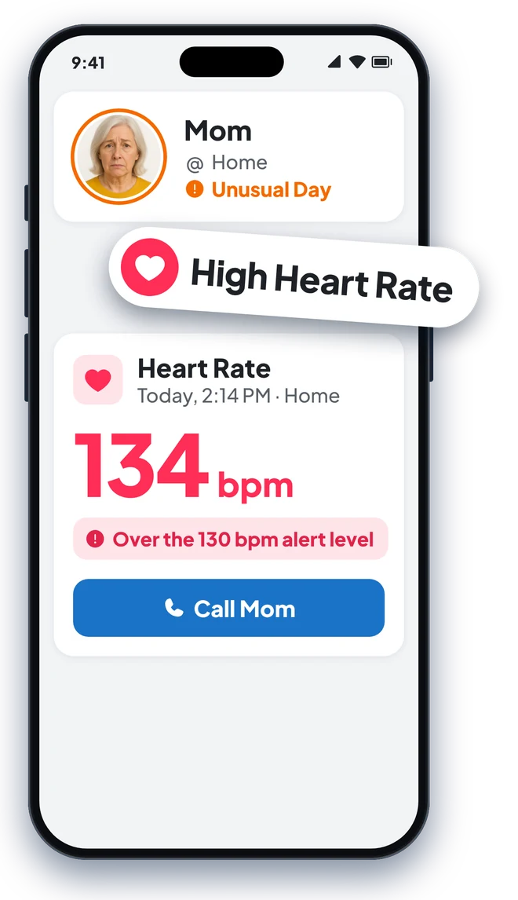
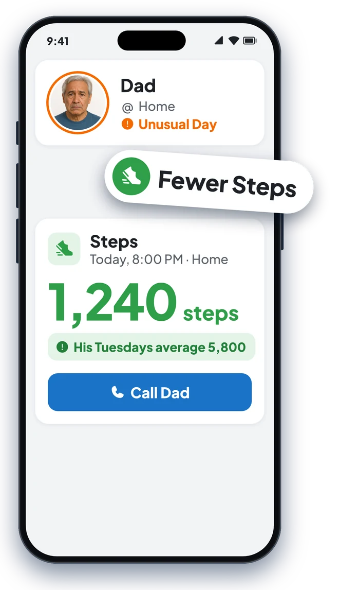

Health and Fitness
Alerts
Know when their steps or sleep look different.
Works with Apple Watch, Oura, Whoop, and Apple Health.
Health & Fitness sharing is available.

"Will it work with what Mom already wears?"
Connects to Apple Health in one tap
If it syncs with Apple Health, it works with Looop.
Looop sends a heads-up when their steps, workouts, sleep, or heart rate look different for them. It reads from Apple Health, the app already on their iPhone, so they keep the Apple Watch, Oura Ring, Whoop, or other device they love. One tap during setup connects it, and from then on their device keeps Looop up to date in the background, with nothing to pair or open.
Already use Find My? Keep it. Looop works alongside Find My, and brings it all together in one place. How Find My and Looop work together

Apple Watch
Works the moment they tap "Turn On All". Nothing else to install.
Oura Ring
Turn on Apple Health in the Oura app to share sleep, heart rate, and workouts.

Whoop
Turn on Apple Health in the Whoop app to share sleep, heart rate, and workouts.
"Is Mom's heart rate okay today?"
A heads-up when it matters
These alerts reach you as soon as the reading comes in.
- Heart rate. If their heart rate goes above 130 or below 40 beats a minute, you'll hear about it, with the time and where they were.
- Breathing rate. You'll get a heads-up if their breathing rate goes above 30 or below 8 breaths a minute.
- Loud places. When their Apple Watch logs a dangerously loud place, the family gets a heads-up as well.
Looop helps you know when to check in. It doesn't detect emergencies. If you think someone is in danger, call 911.

"Did Dad get out for his walk today?"
An evening look at their day
Measured against their own usual week.
Each evening, Looop compares the day with the same weekday over the past few weeks. Dad's Tuesday is compared with his other Tuesdays, so his slow Sundays don't count against him. If something looks different, you get an Unusual Day nudge with a short note on what changed.
Fitness
- Steps and walking distance
- Exercise minutes and workouts
Health
- Sleep, including deep, REM, and light sleep, and naps
- Heart rate, with the day's high and low
- Breathing rate
- Time spent in loud places

"Is Mom sleeping okay lately?"
Their health and fitness in plain words
Each stat says Typical or Unusual.
Open their card to see today's health (sleep, heart rate, and breathing rate) and fitness (steps, walking time, exercise minutes, and workouts). Each one is marked Typical or Unusual, compared with that person's own routine.
When their Apple Watch sends a high, low, or irregular heart rhythm notification, it shows on their card too.

"Can I stop worrying when they don't text back?"
Fewer worried calls, for everyone
Most days, you won't hear a thing.
Quiet means all is well
When their day looks typical, Looop stays quiet, and you can get on with your evening.
You'll know when to call
A racing heart or a short night's sleep comes with a gentle nudge. Maybe give them a call.
Everyone gets the same heads-up
You and your brother see the same alert, so you can decide together who calls Dad.
They keep their routine
They wear their device and go about their day. Looop speaks up only when something looks off.
"Does Dad have to share everything?"
Available, and optional
Health & Fitness sharing is available if you need it, and it can be turned off anytime.
- Health & Fitness sharing is optional. If they skip it, the rest of Looop still works.
- Their health and fitness data is never for sale and never used for ads.
- Only the people in their Looop can see it. Talk it over together before you send the invite.
- Looop never sells your data and doesn't work with advertisers.
- They can turn sharing off in the Health app at any time, or leave the group.
"Is this going to be a whole project?"
Set up in about a minute
After that, their device keeps syncing on its own.
"Does it work with Dad's Garmin?"
More devices that work with Looop
Turn on Apple Health in the device's own app, and Looop does the rest.
More watches and bands
- Garmin, through Garmin Connect
- Fitbit, through the Google Health app (from August 2026)
- Polar, through Polar Flow
- Coros
- Suunto
- Amazfit, through the Zepp app
- Withings ScanWatch
Other health devices
- Withings scales and blood pressure cuffs
- Dexcom and FreeStyle Libre glucose monitors
- Eight Sleep, for sleep data
Looop uses sleep, heart rate, breathing rate, steps, walking distance, exercise minutes, and workouts from Apple Health. Each device decides what it sends to Apple Health, so check the Apple Health settings in its app. Looop doesn't use weight, blood pressure, or glucose readings yet. Those stay in Apple Health.
Questions about Health & Fitness sharing
Does my Loved One need an Apple Watch?
An iPhone on its own counts steps and walking distance. For heart rate, breathing rate, and sleep, they'll need an Apple Watch, Oura Ring, Whoop, or another device that syncs with Apple Health.
Is Health & Fitness sharing optional?
Yes. Health & Fitness sharing is available and optional. Your Loved One turns it on, and can turn it off at any time.
How do they stop sharing?
In the Health app on their iPhone, they tap their profile picture, then Apps, then Looop, and turn off anything they'd rather keep to themselves. They can turn it back on the same way.
Who sees their health and fitness details?
The people in their Looop. Each person picks which alerts they get, and can turn health and fitness alerts off for anyone with one tap.
Does Looop sell health or fitness data?
Looop never sells your data and doesn't work with advertisers.
Does Looop detect emergencies?
No. Looop gives you a heads-up when something seems off, so you know when to check in. If you think someone is in danger, call 911.
Peace of mind for you, independence for them
Get a heads-up when it's worth a call.